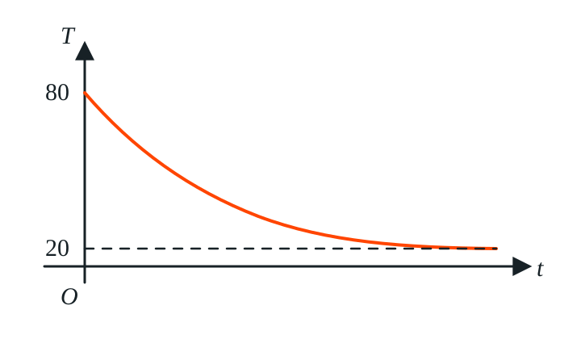

<meta data-alternate="https://freshmark.sunisalex.org/en/" data-article="true" data-canonical="https://freshmark.sunisalex.org/posts/math/2024-2026-beijing-first-mock-basic-properties-of-functions/" data-description="整理 2024—2026 年北京高三一模数学试题中的函数基本性质专题，共 10 道单选题与填空题，仅收录题目。" data-freshmark-page data-title="2024—2026 北京高三一模数学汇编：函数的基本性质 — Freshmark"><main><header class="container article-header"><a href="/" class="back-link">← 返回全部文章</a><p class="eyebrow article-subject">数学</p><h1>2024—2026 北京高三一模数学汇编：函数的基本性质</h1><p class="article-dek">整理 2024—2026 年北京高三一模数学试题中的函数基本性质专题，共 10 道单选题与填空题，仅收录题目。</p><div class="article-meta"><time datetime="2026-08-16">2026年8月16日</time><span>7 分钟阅读</span><span>数学 · 北京高考 · 一模 · 函数的基本性质</span><span class="view-count" data-article-view-count hidden>本文访问量 <strong data-article-views></strong></span><a href="index.md" download>下载 Markdown</a><button type="button" class="article-share" data-share-article data-share-text="整理 2024—2026 年北京高三一模数学试题中的函数基本性质专题，共 10 道单选题与填空题，仅收录题目。" data-share-title="2024—2026 北京高三一模数学汇编：函数的基本性质"><span data-share-label>分享文章</span></button><output aria-live="polite" class="visually-hidden" data-share-status role="status"></output></div></header><div class="article-wrap"><aside class="toc"><div class="toc-head"><p>本文目录</p><button type="button" class="toc-toggle" aria-expanded="false" aria-label="展开或收起目录" data-toc-toggle><span class="toc-toggle-label">目录</span><span class="toc-toggle-icon" aria-hidden="true"></span></button></div><nav aria-label="目录" class="toc-links" data-toc-links><a href="#一单选题" class="toc-level-2">一、单选题</a><a href="#12026-北京海淀高三一模" class="toc-level-3">1.（2026 北京海淀高三一模）</a><a href="#22026-北京房山高三一模" class="toc-level-3">2.（2026 北京房山高三一模）</a><a href="#32025-北京东城高三一模" class="toc-level-3">3.（2025 北京东城高三一模）</a><a href="#42024-北京西城高三一模" class="toc-level-3">4.（2024 北京西城高三一模）</a><a href="#二填空题" class="toc-level-2">二、填空题</a><a href="#52026-北京西城高三一模" class="toc-level-3">5.（2026 北京西城高三一模）</a><a href="#62026-北京昌平高三一模" class="toc-level-3">6.（2026 北京昌平高三一模）</a><a href="#72026-北京石景山高三一模" class="toc-level-3">7.（2026 北京石景山高三一模）</a><a href="#82025-北京西城高三一模" class="toc-level-3">8.（2025 北京西城高三一模）</a><a href="#92025-北京石景山高三一模" class="toc-level-3">9.（2025 北京石景山高三一模）</a><a href="#102024-北京丰台高三一模" class="toc-level-3">10.（2024 北京丰台高三一模）</a></nav></aside><article class="prose"><p>本文整理 2024—2026 年北京高三一模数学试题中的函数基本性质专题。以下仅收录题目，不含答案与解答过程。</p><h2 id="一单选题">一、单选题</h2><h3 id="12026-北京海淀高三一模">1.（2026 北京海淀高三一模）</h3><p>已知函数</p><p><span class="math-expression math-display" data-math-source="f(x)= \begin{cases} ax^2+bx, &amp; x&lt;0,\\ bx^2-ax, &amp; x\ge0, \end{cases}" data-math-display></span></p><p>则“<span class="math-expression math-inline" data-math-source="ab&lt;0"></span>”是“<span class="math-expression math-inline" data-math-source="f(x)"></span>&#32;在 <span class="math-expression math-inline" data-math-source="\mathbb R"></span>&#32;上为单调函数”的（　）</p><ul><li>A. 充分不必要条件</li><li>B. 必要不充分条件</li><li>C. 充要条件</li><li>D. 既不充分也不必要条件</li></ul><p>如果<span class="math-expression math-inline" data-math-source="ab\gt0"></span>,则<span class="math-expression math-inline" data-math-source="a,b"></span>同号,显然有<span class="math-expression math-inline" data-math-source="s\to+\infty,t\to -\infty"></span>,<span class="math-expression math-inline" data-math-source="f(s),f(t)\to\pm\infty"></span>,则与“<span class="math-expression math-inline" data-math-source="f(x)"></span>&#32;在 <span class="math-expression math-inline" data-math-source="\mathbb R"></span>&#32;上为单调函数”矛盾.</p><p>如果<span class="math-expression math-inline" data-math-source="ab=0"></span>,取<span class="math-expression math-inline" data-math-source="a=1,b=0"></span>,则有<span class="math-expression math-inline" data-math-source="f(x)"></span>在<span class="math-expression math-inline" data-math-source="\R"></span>上单调递减.</p><p>如果<span class="math-expression math-inline" data-math-source="ab\lt0"></span>,函数在<span class="math-expression math-inline" data-math-source="y"></span>轴两侧对应的抛物线开口方向相反,且<span class="math-expression math-inline" data-math-source="f(0)=f(0^-)=0"></span>.</p><p>现在考察两个抛物线的对称轴:</p><p><span class="math-expression math-display" data-math-source="-\frac{b}{2a}\gt0,\frac{a}{2b}\lt0" data-math-display></span></p><p>因此,<span class="math-expression math-inline" data-math-source="f(x)"></span>&#32;在 <span class="math-expression math-inline" data-math-source="\mathbb R"></span>&#32;上为单调函数<span class="math-expression math-inline" data-math-source="\Longleftrightarrow ab\le0"></span></p><p>正确答案:A</p><h3 id="22026-北京房山高三一模">2.（2026 北京房山高三一模）</h3><p>设 <span class="math-expression math-inline" data-math-source="0&lt;a&lt;1"></span>，函数</p><p><span class="math-expression math-display" data-math-source="f(x)= \begin{cases} a(x+2), &amp; x&lt;-a,\\ \sqrt{a^2-x^2}, &amp; -a\le x\le a,\\ -a(x-2), &amp; x&gt;a, \end{cases}" data-math-display></span></p><p>则 <span class="math-expression math-inline" data-math-source="f(x)"></span>（　）</p><ul><li>A. 是偶函数，且有最大值</li><li>B. 是偶函数，且没有最大值</li><li>C. 是奇函数，且有最大值</li><li>D. 是奇函数，且没有最大值</li></ul><p>先判断奇偶性:</p><p><span class="math-expression math-display" data-math-source="x\in[-a,+a],f(-x)=f(x)\\
x\in(a,+\infty),\\
f(x)=-a(x-2)=a(-x+2)=f(-x)" data-math-display></span></p><p>所以函数<span class="math-expression math-inline" data-math-source="f(x)"></span>为偶函数.</p><p>函数<span class="math-expression math-inline" data-math-source="f(x)"></span>若没有最大值,很可能是有上确界,但是取不到.</p><p>由于<span class="math-expression math-inline" data-math-source="f(x)"></span>是偶函数,只考虑<span class="math-expression math-inline" data-math-source="[0,+\infty)"></span>的情况:</p><p><span class="math-expression math-display" data-math-source="x\in[0,a],f(x)\le f(0)=a\\
x\in(a,+\infty),f(x)\lt f(a^+)=-a^2+2a\gt a" data-math-display></span></p><p>所以<span class="math-expression math-inline" data-math-source="\sup f(x)=-a^2+2a"></span>,等号无法成立,<span class="math-expression math-inline" data-math-source="f(x)"></span>没有最大值.</p><p>正确答案:B</p><h3 id="32025-北京东城高三一模">3.（2025 北京东城高三一模）</h3><p>中国茶文化博大精深，茶水的口感与水的温度有关。一杯 <span class="math-expression math-inline" data-math-source="80^\circ\mathrm C"></span>&#32;的热红茶置于 <span class="math-expression math-inline" data-math-source="20^\circ\mathrm C"></span>&#32;的房间里，茶水的温度 <span class="math-expression math-inline" data-math-source="T"></span>（单位：<span class="math-expression math-inline" data-math-source="^\circ\mathrm C"></span>）与时间 <span class="math-expression math-inline" data-math-source="t"></span>（单位：<span class="math-expression math-inline" data-math-source="\mathrm{min}"></span>）的函数 <span class="math-expression math-inline" data-math-source="T=f(t)"></span>&#32;的图像如图所示。已知 <span class="math-expression math-inline" data-math-source="t_1,t_3"></span>&#32;不相等，下列说法正确的是（　）</p><p></p><ul><li>A. 若 <span class="math-expression math-inline" data-math-source="t_1+t_3=2t_2"></span>，则 <span class="math-expression math-inline" data-math-source="f(t_1)+f(t_3)&gt;2f(t_2)"></span></li><li>B. 若 <span class="math-expression math-inline" data-math-source="t_1+t_3&gt;2t_2"></span>，则 <span class="math-expression math-inline" data-math-source="f(t_1)+f(t_3)&gt;2f(t_2)"></span></li><li>C. 若 <span class="math-expression math-inline" data-math-source="f(t_1)+f(t_3)=2f(t_2)"></span>，则 <span class="math-expression math-inline" data-math-source="t_1+t_3&lt;2t_2"></span></li><li>D. 若 <span class="math-expression math-inline" data-math-source="f(t_1)+f(t_3)&gt;2f(t_2)"></span>，则 <span class="math-expression math-inline" data-math-source="t_1+t_3&gt;2t_2"></span></li></ul><p>从凹凸性的角度考虑,有:</p><p><span class="math-expression math-display" data-math-source="f(t_1)+f(t_3)\gt 2f(\frac{t_1+t_3}{2})" data-math-display></span></p><p>对于A:</p><p><span class="math-expression math-display" data-math-source="t_1+t_3=2t_2\\
f(t_1)+f(t_3)\gt 2f(\frac{t_1+t_3}{2})=2f(t_2)" data-math-display></span></p><p>对于B:</p><p><span class="math-expression math-display" data-math-source="t_1+t_3\gt2t_2\\
f(t_1)+f(t_3)\gt 2f(\frac{t_1+t_3}{2})\lt2f(t_2)" data-math-display></span></p><p>对于C:</p><p><span class="math-expression math-display" data-math-source="f(t_1)+f(t_3)=2f(t_2)\gt 2f(\frac{t_1+t_3}{2})\\
t_2\lt \frac{t_1+t_3}{2}\\
t_1+t_3\gt2t_2" data-math-display></span></p><p>对于D:</p><p><span class="math-expression math-display" data-math-source="f(t_1)+f(t_3)&gt;2f(t_2)\\
f(t_1)+f(t_3)\gt 2f(\frac{t_1+t_3}{2})" data-math-display></span></p><p>无法比较<span class="math-expression math-inline" data-math-source="t_2,\frac{t_1+t_3}{2}"></span>.</p><p>正确答案:A</p><h3 id="42024-北京西城高三一模">4.（2024 北京西城高三一模）</h3><p>设</p><p><span class="math-expression math-display" data-math-source="a=t-\frac1t,\qquad b=t+\frac1t,\qquad c=t(2+t)," data-math-display></span></p><p>其中 <span class="math-expression math-inline" data-math-source="-1&lt;t&lt;0"></span>，则（　）</p><ul><li>A. <span class="math-expression math-inline" data-math-source="b&lt;a&lt;c"></span></li><li>B. <span class="math-expression math-inline" data-math-source="c&lt;a&lt;b"></span></li><li>C. <span class="math-expression math-inline" data-math-source="b&lt;c&lt;a"></span></li><li>D. <span class="math-expression math-inline" data-math-source="c&lt;b&lt;a"></span></li></ul><p><span class="math-expression math-display" data-math-source="t\in(-1,0),\frac1t\lt t\lt0,t^2\gt0\\
a-b=-2\frac1t\gt0\\
a\gt b\\
c=2t+t^2\gt2t\gt t+\frac1t=b" data-math-display></span></p><p>比较<span class="math-expression math-inline" data-math-source="a,c"></span>:</p><p><span class="math-expression math-display" data-math-source="t\to -1,a\to 0,c\to -1\\
c\lt a" data-math-display></span></p><p>理由是因为:</p><p><span class="math-expression math-display" data-math-source="c\lt0\lt a" data-math-display></span></p><p>正确答案:C</p><p>启示:</p><ul><li>运用极限情况,可以初步判断大小顺序</li><li>将0作为中间量,可以简化判断</li><li><span class="math-expression math-inline" data-math-source="|x|=1"></span>是<span class="math-expression math-inline" data-math-source="x,\frac1x"></span>大小关系的分界线.</li></ul><h2 id="二填空题">二、填空题</h2><h3 id="52026-北京西城高三一模">5.（2026 北京西城高三一模）</h3><p>记 <span class="math-expression math-inline" data-math-source="[x]"></span>&#32;表示不超过实数 <span class="math-expression math-inline" data-math-source="x"></span>&#32;的最大整数。设 <span class="math-expression math-inline" data-math-source="a,b"></span>&#32;为正整数，函数</p><p><span class="math-expression math-display" data-math-source="f(x)=[ax]+[bx]," data-math-display></span></p><p>给出以下四个结论：</p><p>① 对于任意的 <span class="math-expression math-inline" data-math-source="x_1,x_2"></span>，若 <span class="math-expression math-inline" data-math-source="x_1&lt;x_2"></span>，则 <span class="math-expression math-inline" data-math-source="f(x_1)\le f(x_2)"></span>；</p><p>② 存在正整数 <span class="math-expression math-inline" data-math-source="a,b"></span>，使得曲线 <span class="math-expression math-inline" data-math-source="y=f(x)"></span>&#32;关于坐标原点对称；</p><p>③ 设 <span class="math-expression math-inline" data-math-source="a=2,b=3"></span>，则方程 <span class="math-expression math-inline" data-math-source="f(x)=10"></span>&#32;有无数个解；</p><p>④ 设 <span class="math-expression math-inline" data-math-source="a=2,b=3"></span>，则当 <span class="math-expression math-inline" data-math-source="x\in[0,1)"></span>&#32;时，函数 <span class="math-expression math-inline" data-math-source="f(x)"></span>&#32;的值域中有且仅有 <span class="math-expression math-inline" data-math-source="5"></span>&#32;个元素。</p><p>其中，所有正确结论的序号是 ________。</p><p>①显然正确,因为内层函数<span class="math-expression math-inline" data-math-source="t=kx"></span>和外层函数<span class="math-expression math-inline" data-math-source="y=[t]"></span>都不减.</p><p>②:采用极限法分析</p><p><span class="math-expression math-display" data-math-source="f(0^+)=0+0=0\\
f(0^-)=-1-1=-2" data-math-display></span></p><p>不可能让<span class="math-expression math-inline" data-math-source="f(x)"></span>为奇函数</p><p>③:解方程</p><p><span class="math-expression math-display" data-math-source="[2x]+[3x]=10" data-math-display></span></p><p>如果指定<span class="math-expression math-inline" data-math-source="[2x]=4,[3x]=6"></span>,对应不等式:</p><p><span class="math-expression math-display" data-math-source="4\le 2x\lt5,6\le3x\lt7\\
x\in[2,\frac73)" data-math-display></span></p><p>这对应无数个解.</p><p>此外,结合①,<span class="math-expression math-inline" data-math-source="f(\frac73)=11,f(2^-)=8"></span>,知方程的解为<span class="math-expression math-inline" data-math-source="x\in[2,\frac73)"></span></p><p>或者这么解决:</p><p>对于③，当 <span class="math-expression math-inline" data-math-source="a=2, b=3"></span>&#32;时，<span class="math-expression math-inline" data-math-source="f(x)=[2x]+[3x]"></span>，</p><p>设 <span class="math-expression math-inline" data-math-source="x=n+t, n \in \mathbf{Z}, t \in [0,1)"></span>，可得 <span class="math-expression math-inline" data-math-source="[2x]=[2n+2t]=2n+[2t], [3x]=3n+[3t]"></span>，</p><p>所以 <span class="math-expression math-inline" data-math-source="f(x)=5n+[2t]+[3t]"></span>，</p><p>令 <span class="math-expression math-inline" data-math-source="f(x)=10"></span>，可得 <span class="math-expression math-inline" data-math-source="5n+[2t]+[3t]=10"></span>，解得 <span class="math-expression math-inline" data-math-source="n=\frac{10-([2t]+[3t])}{5}"></span>，</p><p>当 <span class="math-expression math-inline" data-math-source="t \in [0, \frac{1}{3})"></span>&#32;时，可得 <span class="math-expression math-inline" data-math-source="[2t]=0, [3t]=0"></span>，可得 <span class="math-expression math-inline" data-math-source="[2t]+[3t]=0"></span>；</p><p>当 <span class="math-expression math-inline" data-math-source="t \in [\frac{1}{3}, \frac{1}{2})"></span>&#32;时，可得 <span class="math-expression math-inline" data-math-source="[2t]=0, [3t]=1"></span>，可得 <span class="math-expression math-inline" data-math-source="[2t]+[3t]=1"></span>；</p><p>当 <span class="math-expression math-inline" data-math-source="t \in [\frac{1}{2}, \frac{2}{3})"></span>&#32;时，可得 <span class="math-expression math-inline" data-math-source="[2t]=1, [3t]=1"></span>，可得 <span class="math-expression math-inline" data-math-source="[2t]+[3t]=2"></span>；</p><p>当 <span class="math-expression math-inline" data-math-source="t \in [\frac{2}{3}, 1)"></span>&#32;时，可得 <span class="math-expression math-inline" data-math-source="[2t]=1, [3t]=2"></span>，可得 <span class="math-expression math-inline" data-math-source="[2t]+[3t]=3"></span>；</p><p>设 <span class="math-expression math-inline" data-math-source="m=[2t]+[3t] \in \{0,1,2,3\}"></span>，由 <span class="math-expression math-inline" data-math-source="n=\frac{10-m}{5}"></span>&#32;且 <span class="math-expression math-inline" data-math-source="n"></span>&#32;为整数，</p><p>当 <span class="math-expression math-inline" data-math-source="m=0"></span>&#32;时，可得 <span class="math-expression math-inline" data-math-source="n=2 \in \mathbf{Z}"></span>；当 <span class="math-expression math-inline" data-math-source="m=1"></span>&#32;时，可得 <span class="math-expression math-inline" data-math-source="n=\frac{9}{5} \notin \mathbf{Z}"></span>；</p><p>当 <span class="math-expression math-inline" data-math-source="m=2"></span>&#32;时，可得 <span class="math-expression math-inline" data-math-source="n=\frac{8}{5} \notin \mathbf{Z}"></span>；当 <span class="math-expression math-inline" data-math-source="m=3"></span>&#32;时，可得 <span class="math-expression math-inline" data-math-source="n=\frac{7}{5} \notin \mathbf{Z}"></span>；</p><p>所以当 <span class="math-expression math-inline" data-math-source="x=2+t"></span>&#32;且 <span class="math-expression math-inline" data-math-source="t \in [0, \frac{1}{3})"></span>&#32;时，满足 <span class="math-expression math-inline" data-math-source="f(x)=10"></span>，此时有无数个解，所以③正确；</p><p>④:<span class="math-expression math-inline" data-math-source="f(x)=[2x]+[3x]"></span></p><p>分类讨论<span class="math-expression math-inline" data-math-source="x"></span>:</p><p><span class="math-expression math-display" data-math-source="x\in[0,\frac13),f(x)=0+0=0\\
x\in[\frac13,\frac12),f(x)=0+1=1\\
x\in[\frac12,\frac23),f(x)=1+1=2\\
x\in[\frac23,1),f(x)=1+2=3\\
\therefore f(x)\in\{0,1,2,3\}" data-math-display></span></p><p>正确答案:①③</p><h3 id="62026-北京昌平高三一模">6.（2026 北京昌平高三一模）</h3><p>设函数</p><p><span class="math-expression math-display" data-math-source="f(x)= \begin{cases} -ax+1, &amp; x&gt;a,\\ (x+2)^2, &amp; x\le a. \end{cases}" data-math-display></span></p><p>若 <span class="math-expression math-inline" data-math-source="f(x)"></span>&#32;存在最小值，则 <span class="math-expression math-inline" data-math-source="a"></span>&#32;的一个取值为 ________，<span class="math-expression math-inline" data-math-source="a"></span>&#32;的最小值为 ____。</p><p>我们直接寻找<span class="math-expression math-inline" data-math-source="a"></span>的充要条件: <span class="math-expression math-display" data-math-source="a=0,f(x)\ge f(-2)=0\\
a\gt0,-a\lt0,f(+\infty)=-\infty" data-math-display></span></p><p>对于<span class="math-expression math-inline" data-math-source="a\lt0"></span>的情况,我们根据端点分类讨论:</p><p><span class="math-expression math-display" data-math-source="a\in[-1,0),x\gt a,f(x)\gt f(a^+)=1-a^2\ge0\\
x\le a,f(x)\ge f(-2)=0,\text{符合题意}\\
a\in [-2,-1),x\gt a,f(x)\gt f(a^+)=1-a^2\lt0\\
x\le a,f(x)\ge f(-2)=0,\text{不符合题意}\\
a\in(-\infty,-2),x\gt a,f(x)\gt f(a^+)\lt0\\
x\le a,f(x)\ge f(a)\gt0,\text{不符合题意}" data-math-display></span></p><p>综上,<span class="math-expression math-inline" data-math-source="a\in[-1,0]"></span></p><p>正确答案:,<span class="math-expression math-inline" data-math-source="a\in[-1,0],a_{min}=-1"></span></p><h3 id="72026-北京石景山高三一模">7.（2026 北京石景山高三一模）</h3><p>设函数</p><p><span class="math-expression math-display" data-math-source="f(x)= \begin{cases} \sqrt{x+1}, &amp; x\in[-1,a),\\ ax+1, &amp; x\in[a,3]. \end{cases}" data-math-display></span></p><p>当 <span class="math-expression math-inline" data-math-source="a=0"></span>&#32;时，<span class="math-expression math-inline" data-math-source="f(x)"></span>&#32;的值域为 ________；若方程 <span class="math-expression math-inline" data-math-source="f(x)-\dfrac12=0"></span>&#32;有两个不同的解，则实数 <span class="math-expression math-inline" data-math-source="a"></span>&#32;的一个取值可以是 ____。</p><p>当<span class="math-expression math-inline" data-math-source="a=0"></span>时,对自变量<span class="math-expression math-inline" data-math-source="x"></span>的值分类讨论:</p><p><span class="math-expression math-display" data-math-source="x\in[-1,0),f(x)=\sqrt{x+1}\in[0,1)\\
x\in[0,3],f(x)=1" data-math-display></span></p><p>综上,<span class="math-expression math-inline" data-math-source="f(x)"></span>的值域为<span class="math-expression math-inline" data-math-source="[0,1]"></span>.</p><p>若<span class="math-expression math-inline" data-math-source="f(x)=\frac12"></span>有两个不同的解,则两个解<span class="math-expression math-inline" data-math-source="-1\le x_1\lt a\le x_2\le 3"></span>:</p><p><span class="math-expression math-display" data-math-source="\Longleftrightarrow \begin{cases}0\le \frac12\lt \sqrt{a+1},\\ \min \{a^2+1,3a+1\}\le \frac12\le\max\{a^2+1,3a+1\},\\ a\le 3\end{cases}\\ \Longleftrightarrow \begin{cases}\frac14\lt a+1,\\ (a^2+1-\frac12)(3a+1-\frac12)\le0\end{cases}\\ \Longleftrightarrow a\in(-\frac34,-\frac16]" data-math-display></span></p><h3 id="82025-北京西城高三一模">8.（2025 北京西城高三一模）</h3><p>记 <span class="math-expression math-inline" data-math-source="[x]"></span>&#32;表示不超过实数 <span class="math-expression math-inline" data-math-source="x"></span>&#32;的最大整数。设函数</p><p><span class="math-expression math-display" data-math-source="f(x)=x+[x]," data-math-display></span></p><p>有以下四个结论：</p><p>① 函数 <span class="math-expression math-inline" data-math-source="f(x)"></span>&#32;为单调函数；</p><p>② 对于任意的 <span class="math-expression math-inline" data-math-source="x"></span>，<span class="math-expression math-inline" data-math-source="f(x)+f(-x)=0"></span>&#32;或 <span class="math-expression math-inline" data-math-source="f(x)+f(-x)=-1"></span>；</p><p>③ 集合 <span class="math-expression math-inline" data-math-source="\{x\mid f(x)=a\}"></span>（<span class="math-expression math-inline" data-math-source="a"></span>&#32;为常数）中有且仅有一个元素；</p><p>④ 满足 <span class="math-expression math-inline" data-math-source="f(x)+f(y)\le7"></span>&#32;的点 <span class="math-expression math-inline" data-math-source="(x,y)"></span>（<span class="math-expression math-inline" data-math-source="x\ge0,y\ge0"></span>）构成的区域的面积为 <span class="math-expression math-inline" data-math-source="8"></span>。</p><p>其中，所有正确结论的序号是 ________。</p><p>对于①,显然有<span class="math-expression math-inline" data-math-source="y=x"></span>单调递增,<span class="math-expression math-inline" data-math-source="y=[x]"></span>不减,所以<span class="math-expression math-inline" data-math-source="f(x)"></span>单调递增</p><p>②:设<span class="math-expression math-inline" data-math-source="x=p+q,p\in Z,q\in[0,1)"></span>,下面对小数部分进行分类:</p><p><span class="math-expression math-display" data-math-source="q\in(0,1),-x=-p-q\in(-p-1,-p)\\
f(x)+f(-x)=p+(-p-1)=-1\\
q=0,-x=-p\\
f(x)+f(-x)=p+(-p)=0" data-math-display></span></p><p>③:举反例<span class="math-expression math-inline" data-math-source="a=-\frac12"></span>,显然有<span class="math-expression math-inline" data-math-source="f(x)\in[0,+\infty)\cup(-\infty,-1)"></span></p><p>④:首先作出<span class="math-expression math-inline" data-math-source="f(x)"></span>与<span class="math-expression math-inline" data-math-source="x"></span>的对应关系</p><p><span class="math-expression math-display" data-math-source="x\in[p,p+1),f(x)=p+x\in[2p,2p+1)\\
x\in[0,1),f(x)\in[0,1)\\
x\in[1,2),f(x)\in[2,3)\\
x\in[2,3),f(x)\in[4,5)\\
x\in[3,4),f(x)\in[6,7)\\
x\in[4,5),f(x)\in[8,9)" data-math-display></span></p><p>显然有<span class="math-expression math-inline" data-math-source="x,y\in[0,4)"></span>,下面根据<span class="math-expression math-inline" data-math-source="x"></span>进行分类:</p><p><span class="math-expression math-display" data-math-source="x\in(0,1),f(x)=x\in(0,1),f(y)\in[0,7-x]\\
y_{\max}\in[3,4),f(y_{\max})=y_{\max}+3=7-x\\
y_{\max}=4-x\\
x\in(1,2),f(x)=x+1\in(2,3),f(y)\in[0,6-x]\\
y_{\max}\in[2,3),f(y_{\max})=y_{\max}+2=6-x\\
y_{\max}=4-x\\
x\in(2,3),f(x)=x+2\in(4,5),f(y)\in[0,5-x)\\
y_{\max}\in[1,2),f(y_{\max})=y_{\max}+1=5-x\\
y_{\max}=4-x\\
x\in(3,4),f(x)=x+3\in(6,7),f(y)\in[0,4-x)\\
y_{\max}\in[0,1),f(y_{\max})=y_{\max}=4-x\\
y_{\max}=4-x\\" data-math-display></span></p><p>综上,区域面积等于<span class="math-expression math-inline" data-math-source="x+y-4=0"></span>与坐标轴围成三角形的面积<span class="math-expression math-inline" data-math-source="\frac{1}{2}\cdot4^2=8"></span></p><h3 id="92025-北京石景山高三一模">9.（2025 北京石景山高三一模）</h3><p>高斯取整函数 <span class="math-expression math-inline" data-math-source="f(x)=[x]"></span>&#32;的函数值表示不超过 <span class="math-expression math-inline" data-math-source="x"></span>&#32;的最大整数，例如，<span class="math-expression math-inline" data-math-source="[-3.5]=-4"></span>，<span class="math-expression math-inline" data-math-source="[2.1]=2"></span>。有如下四个结论：</p><p>① 若 <span class="math-expression math-inline" data-math-source="x\in(0,1)"></span>，则</p><p><span class="math-expression math-display" data-math-source="f(-x)+\frac12=-\left(f(x)+\frac12\right);" data-math-display></span></p><p>② 函数 <span class="math-expression math-inline" data-math-source="f(x)=[x]"></span>&#32;与函数 <span class="math-expression math-inline" data-math-source="h(x)=x-1"></span>&#32;无公共点；</p><p>③</p><p><span class="math-expression math-display" data-math-source="\sum_{k=1}^{23}f\!\left(-\frac{k}{7}\right)
+\sum_{k=1}^{23}f\!\left(\frac{k}{7}\right)=-23;" data-math-display></span></p><p>④ 所有满足 <span class="math-expression math-inline" data-math-source="f(m)=f(n)"></span>（<span class="math-expression math-inline" data-math-source="m,n\in\left[0,\dfrac{10}{3}\right]"></span>）的点 <span class="math-expression math-inline" data-math-source="(m,n)"></span>&#32;组成区域的面积为 <span class="math-expression math-inline" data-math-source="\dfrac{28}{9}"></span>。</p><p>其中所有正确结论的序号是 ________。</p><p>对于①: <span class="math-expression math-display" data-math-source="x\in(0,1),f(-x)=-1,f(x)=0\\
f(-x)+\frac12=-(f(x)+\frac12)=-\frac12" data-math-display></span></p><p>对于②,<span class="math-expression math-inline" data-math-source="x\in[-1,0),[x]=x-1=h(x)"></span>,有无穷个公共点.</p><p>对于③: <span class="math-expression math-display" data-math-source="x\in\Z,f(x)+f(-x)=0,x\ne\Z,f(x)+f(-x)=-1\\
\sum_{k=1}^{23}f\!\left(-\frac{k}{7}\right)
+\sum_{k=1}^{23}f\!\left(\frac{k}{7}\right)\\
=-23+3=-20" data-math-display></span></p><p>对于④:</p><p><span class="math-expression math-display" data-math-source="f(m)=f(n),m=p+q,p\in\Z,q\in[0,1)\\ \Longleftrightarrow \begin{cases}n\in[m,m+1),q=0\\ n\in[p,p+1),q\in(0,1)\end{cases}" data-math-display></span></p><p>为了计算面积,可以不考虑局部处的单点图像.我们只考虑<span class="math-expression math-inline" data-math-source="q\in(0,1)"></span>,那么:</p><p><span class="math-expression math-display" data-math-source="n\in[p,p+1)\\
m\in(0,1),n\in(0,1)\\
m\in(1,2),n\in(1,2)\\
m\in(2,3),n\in(2,3)\\
m\in(3,\frac{10}3],n\in(3,\frac{10}3]" data-math-display></span></p><p>事实上:</p><p><span class="math-expression math-display" data-math-source="m\in[0,1),n\in[0,1)\\
m\in[1,2),n\in[1,2)\\
m\in[2,3),n\in[2,3)\\
m\in[3,\frac{10}3],n\in(3,\frac{10}3]" data-math-display></span></p><p>于是面积等于<span class="math-expression math-inline" data-math-source="3\cdot1+(\frac13)^2=\frac{28}{9}"></span></p><h3 id="102024-北京丰台高三一模">10.（2024 北京丰台高三一模）</h3><p>已知函数 <span class="math-expression math-inline" data-math-source="f(x)"></span>&#32;具有下列性质：</p><p>① 当 <span class="math-expression math-inline" data-math-source="x_1,x_2\in[0,+\infty)"></span>&#32;时，都有</p><p><span class="math-expression math-display" data-math-source="f(x_1+x_2)=f(x_1)+f(x_2)+1;" data-math-display></span></p><p>② 在区间 <span class="math-expression math-inline" data-math-source="(0,+\infty)"></span>&#32;上，<span class="math-expression math-inline" data-math-source="f(x)"></span>&#32;单调递增；</p><p>③ <span class="math-expression math-inline" data-math-source="f(x)"></span>&#32;是偶函数。</p><p>则 <span class="math-expression math-inline" data-math-source="f(0)="></span>&#32;________；函数 <span class="math-expression math-inline" data-math-source="f(x)"></span>&#32;可能的一个解析式为 <span class="math-expression math-inline" data-math-source="f(x)="></span>&#32;____。</p><p>令<span class="math-expression math-inline" data-math-source="x_1=x_2=0,f(0)=2f(0)+1,f(0)=-1"></span></p><p>把常数吞入<span class="math-expression math-inline" data-math-source="g(x)"></span>中,构造柯西方程:</p><p><span class="math-expression math-display" data-math-source="g(x)=f(x)-k,x\ge0\\
g(x_1+x_2)+k=g(x_1)+k+g(x_2)+k+1\\
\text{let }k=2k+1,k=-1\\
g(x_1+x_2)=g(x_1)+g(x_2)" data-math-display></span></p><p>由<span class="math-expression math-inline" data-math-source="g(x)=f(x)-k=f(x)+1"></span>在<span class="math-expression math-inline" data-math-source="(0,+\infty)"></span>上单调递增,有<span class="math-expression math-inline" data-math-source="g(x)\equiv cx,c\in(0,+\infty)"></span></p><p>所以:</p><p><span class="math-expression math-display" data-math-source="f(x)=\begin{cases}cx-1,x\ge0,\\ -cx-1,x\lt0\end{cases}=c|x|-1" data-math-display></span></p><p>其中,<span class="math-expression math-inline" data-math-source="c\gt0"></span></p></article></div><section class="container comments" data-comments data-comments-path="/posts/math/2024-2026-beijing-first-mock-basic-properties-of-functions/"><div class="comments-head"><div><p class="eyebrow">评论</p><h2 data-comments-title>评论</h2></div><p>登录后参与讨论。注册时只需验证一次邮箱。</p></div><div class="comment-list" aria-live="polite" data-comment-list><p class="comment-state" data-comment-state>正在加载评论…</p></div><button type="button" class="comment-more" data-comments-more hidden>加载更早的评论</button><div class="comment-auth" data-comment-auth><p class="comment-auth-status" data-auth-loading>正在检查登录状态…</p><div hidden data-auth-guest><form class="comment-auth-form" data-auth-login><h3>登录后评论</h3><label>邮箱<input autocomplete="email" name="email" maxlength="254" required type="email"></label><label>密码<input autocomplete="current-password" name="password" maxlength="128" required type="password"></label><div class="comment-form-foot"><p class="comment-form-status" role="status" data-auth-login-status></p><button type="submit">登录</button></div></form><details class="comment-register"><summary>还没有账号？注册</summary><form class="comment-auth-form" data-auth-register><label>昵称<input autocomplete="name" name="name" maxlength="40" required></label><label>邮箱<input autocomplete="email" name="email" maxlength="254" required type="email"></label><label>密码<input autocomplete="new-password" name="password" maxlength="128" required type="password" minlength="8"></label><p class="comment-auth-hint">至少 8 个字符。</p><div class="comment-form-foot"><p class="comment-form-status" role="status" data-auth-register-status></p><button type="submit">注册</button></div></form></details></div><form class="comment-auth-form" hidden data-auth-verify><p>验证码已发送到邮箱，请在 10 分钟内完成注册。</p><label>六位验证码<input autocomplete="one-time-code" name="code" maxlength="6" required minlength="6" inputmode="numeric" pattern="[0-9]{6}"></label><div class="comment-form-foot"><p class="comment-form-status" role="status" data-auth-verify-status></p><button type="submit">完成注册</button></div></form><div class="comment-auth-user" data-auth-user hidden><p>当前登录： <strong data-auth-user-name></strong> <span data-auth-user-email></span></p><button type="button" data-auth-logout>退出登录</button></div></div><form class="comment-form" hidden data-comment-form><label>评论内容<textarea maxlength="2000" minlength="2" name="body" placeholder="写下你的想法…" required rows="5"></textarea></label><p class="comment-markdown-hint">支持 Markdown：加粗、链接、引用、列表和代码。</p><label aria-hidden="true" class="comment-honeypot">Website<input autocomplete="off" name="website" tabindex="-1"></label><div class="comment-form-foot"><p class="comment-form-status" role="status" data-comment-form-status></p><button type="submit" data-comment-submit>发表评论</button></div></form></section></main>